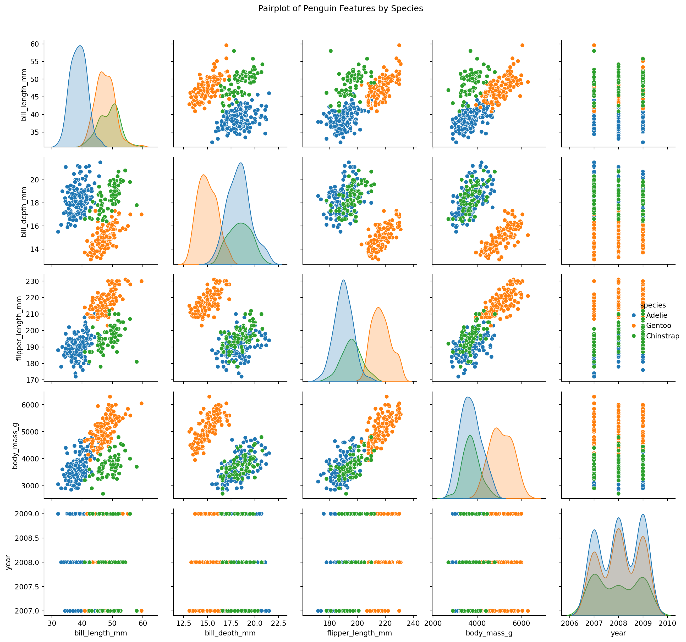
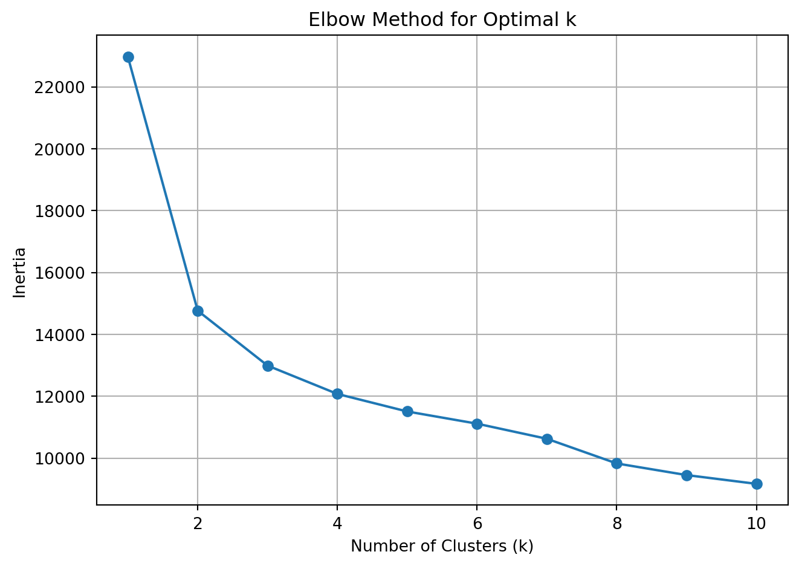
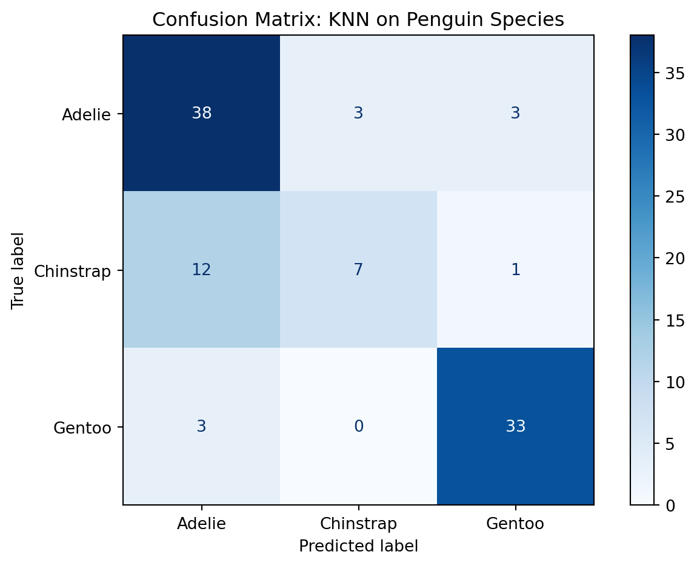
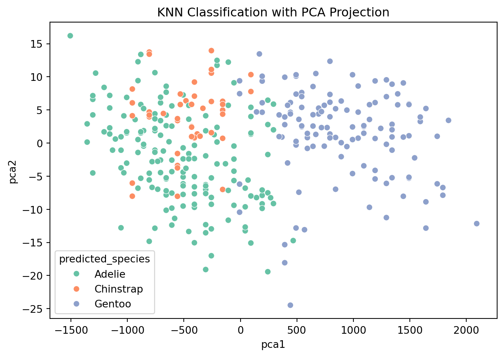

This post implements a few measure of variable importance, interpreted as a key drivers analysis, for certain aspects of a payment card on customer satisfaction with that payment card.
Understanding the Landscape of Machine Learning
When diving into machine learning, two primary branches emerge: supervised and unsupervised learning. Each serves a different purpose and is best suited for particular types of business or research questions.
Tip Knowing when to use supervised vs unsupervised learning is crucial. It’s not just about which algorithm performs best—it’s about which type of model is appropriate for the task at hand.
Supervised Learning: Learning from Labels
Supervised learning uses labeled data, where the correct outcome is known. The goal is to learn a mapping from inputs (features) to outputs (labels) that can be generalized to predict future outcomes.
Common Applications
Predicting customer churn (binary classification)
Forecasting sales or prices (regression)
Recognizing objects in images (multi-class classification)
Algorithms
Linear/Logistic Regression
Decision Trees, Random Forests
Support Vector Machines
K-Nearest Neighbors (KNN) ← we’ll implement this
Challenges
Requires a well-labeled dataset
Risk of overfitting to training data
Performance is sensitive to irrelevant features or noisy labels
Unsupervised Learning: Finding Hidden Patterns
In contrast, unsupervised learning deals with unlabeled data. The algorithm tries to uncover hidden patterns, groupings, or structures from the input alone.
Common Applications
Customer segmentation in marketing
Anomaly detection in fraud analytics
Topic modeling in NLP
Algorithms
K-Means Clustering
Hierarchical Clustering
Principal Component Analysis (PCA)
Latent Class Models
Challenges
Evaluation is less straightforward—no ground truth
Sensitive to initialization and scaling
Choosing the right number of clusters or components is tricky
Supervised vs Unsupervised: Key Differences
Aspect
Supervised Learning
Unsupervised Learning
Input Data
Labeled
Unlabeled
Goal
Predict outcomes
Find structure
Evaluation
Metrics like accuracy, RMSE
Subjective, silhouette score, etc.
Complexity
Depends on model type
Often computationally expensive
Common Use Cases
Classification, Regression
Clustering, Dimensionality Reduction
Our Use Case: Data-Driven Insights Across Domains
In this assignment, we’ll apply both supervised and unsupervised learning to two unique datasets, each offering its own opportunities and challenges.
🐧 1. Palmer Penguins Dataset
Purpose: Supervised learning with K-Nearest Neighbors (KNN)
Task: Classify penguins by species based on physical characteristics
🏷️ 2. Brand Key Drivers Dataset
Purpose: Unsupervised learning via K-Means clustering
Task: Segment respondents by their perceptions of brand characteristics
In the next sections, we’ll explore how to prepare these datasets and apply machine learning techniques to draw actionable insights. Whether predicting outcomes or discovering hidden structures, machine learning gives us a powerful lens through which to understand the data.
Load and Inspect the Penguin Dataset
import pandas as pdimport seaborn as snsimport matplotlib.pyplot as pltpenguins = pd.read_csv("palmer_penguins.csv")penguins_clean = penguins.dropna() # Drop missing valuespenguins_clean.head()
species
island
bill_length_mm
bill_depth_mm
flipper_length_mm
body_mass_g
sex
year
0
Adelie
Torgersen
39.1
18.7
181
3750
male
2007
1
Adelie
Torgersen
39.5
17.4
186
3800
female
2007
2
Adelie
Torgersen
40.3
18.0
195
3250
female
2007
3
Adelie
Torgersen
36.7
19.3
193
3450
female
2007
4
Adelie
Torgersen
39.3
20.6
190
3650
male
2007
Visualize Feature Relationships by Species
sns.pairplot(penguins_clean, hue="species")plt.suptitle("Pairplot of Penguin Features by Species", y=1.02)plt.tight_layout()plt.show()

Pairplot of Numeric Features in Penguin Dataset
The pairplot reveals strong species-level clustering in variables like bill_length_mm, flipper_length_mm, and body_mass_g. These features appear highly informative and will likely support strong performance in classification models such as K-Nearest Neighbors (KNN).
Variables such as trust, appealing, and service exhibit moderate positive correlation with satisfaction. These drivers could be critical in uncovering distinct consumer segments via clustering, and in predicting satisfaction using regression-style models.
🧩 Unsupervised Learning: K-Means Clustering on Brand Perceptions To discover hidden customer segments based on brand attribute perceptions, we’ll apply K-Means clustering to the key drivers dataset. This method groups observations into clusters based on similarity, helping marketers understand distinct consumer mindsets.
Scale Features for K-Means Clustering
from sklearn.preprocessing import StandardScaler# Reload to ensure clean slateimport pandas as pddrivers = pd.read_csv("data_for_drivers_analysis.csv")# Use only feature columns (drop identifiers)X = drivers.drop(columns=["id", "brand", "satisfaction"])# Standardize featuresscaler = StandardScaler()X_scaled = scaler.fit_transform(X)
Use Elbow Method to Select Number of Clusters
from sklearn.cluster import KMeansimport matplotlib.pyplot as pltinertia = []k_range =range(1, 11)for k in k_range: kmeans = KMeans(n_clusters=k, random_state=42) kmeans.fit(X_scaled) inertia.append(kmeans.inertia_)plt.plot(k_range, inertia, marker='o')plt.xlabel('Number of Clusters (k)')plt.ylabel('Inertia')plt.title('Elbow Method for Optimal k')plt.grid(True)plt.tight_layout()plt.show()

Elbow Plot for K-Means Clustering
Fit KMeans with Chosen k (e.g., 3)
kmeans = KMeans(n_clusters=3, random_state=42)clusters = kmeans.fit_predict(X_scaled)# Append cluster labels to original DataFramedrivers['cluster'] = clustersdrivers[['cluster'] +list(X.columns)].groupby("cluster").mean().round(2)
K-Means clustering revealed three distinct customer segments based on how they perceive brand attributes:
Cluster 0 – The Enthusiasts
These respondents rate all brand dimensions—trust, ease, appeal, service, and impact—very highly. They are likely loyal, satisfied users who should be nurtured through loyalty programs or brand ambassador initiatives.
Cluster 1 – The Selective Believers
Moderately positive on select traits (e.g., trust, service), but less impressed with differentiation and innovation. Messaging to this group should emphasize what makes the brand unique and valuable.
Cluster 2 – The Disengaged Skeptics
Low across the board on all brand attributes. These customers either need substantial re-engagement or may be unresponsive to marketing efforts altogether.
Together, these insights can guide targeted brand strategies and campaign design for different audience mindsets.
🧮 Supervised Learning: K-Nearest Neighbors with Penguin Species Classification In this analysis, we’ll use the Palmer Penguins dataset to train a K-Nearest Neighbors (KNN) classifier that predicts a penguin’s species based on physical characteristics like flipper length, bill depth, and body mass.
Load and Preprocess the Penguin Dataset
import pandas as pdfrom sklearn.model_selection import train_test_split# Load and drop missing valuespenguins = pd.read_csv("palmer_penguins.csv").dropna()# Select features and targetfeatures = ["bill_length_mm", "bill_depth_mm", "flipper_length_mm", "body_mass_g"]X = penguins[features]y = penguins["species"]# Split into train/testX_train, X_test, y_train, y_test = train_test_split(X, y, test_size=0.3, random_state=42, stratify=y)
Cleaning the Penguin Data
This code loads the Palmer Penguins dataset, removes rows with missing values, and selects relevant features for classification. We split the dataset into training and test sets to evaluate model performance on unseen data, ensuring a fair and unbiased estimate.
We train a K-Nearest Neighbors classifier with k=5, meaning predictions are based on the five closest neighbors in feature space. We then evaluate performance using accuracy and detailed classification metrics to understand how well the model performs on each species.
Visualize the Confusion Matrix
from sklearn.metrics import confusion_matrix, ConfusionMatrixDisplayimport matplotlib.pyplot as pltcm = confusion_matrix(y_test, y_pred, labels=knn.classes_)disp = ConfusionMatrixDisplay(confusion_matrix=cm, display_labels=knn.classes_)disp.plot(cmap="Blues")plt.title("Confusion Matrix: KNN on Penguin Species")plt.tight_layout()plt.show()

Confusion Matrix for KNN Classification
Don’t be Confused by the Confusion Matrix!
The confusion matrix provides a visual summary of prediction performance by showing how many observations were correctly or incorrectly classified. It highlights which species were most often confused—especially useful for understanding class-level weaknesses.
Project 2D Decision Boundaries with PCA
from sklearn.decomposition import PCAimport seaborn as snspca = PCA(n_components=2)X_proj = pca.fit_transform(X)penguins["pca1"] = X_proj[:, 0]penguins["pca2"] = X_proj[:, 1]# Predict clusters in full setknn_all = KNeighborsClassifier(n_neighbors=5)knn_all.fit(X_proj, y)labels = knn_all.predict(X_proj)penguins["predicted_species"] = labelssns.scatterplot(data=penguins, x="pca1", y="pca2", hue="predicted_species", palette="Set2")plt.title("KNN Classification with PCA Projection")plt.tight_layout()plt.show()

PCA Projection of KNN Classifier
PCA 2D Visualization
We use PCA to reduce the feature space to two dimensions for visualization. This allows us to plot the decision boundaries and predicted species clusters in 2D, making it easier to interpret how the KNN algorithm separates the classes.
Our K-Nearest Neighbors (KNN) model achieved an overall accuracy of 78% in predicting penguin species based on physical measurements like bill length, flipper length, and body mass.
Key insights:
Adelie penguins were classified well with high recall (0.86), though a few were confused with Gentoo.
Gentoo penguins had the best precision and recall (F1-score: 0.90), showing that their physical traits are most distinct.
Chinstrap penguins were the most challenging to classify, with a recall of only 0.35—often mistaken for Adelie.
The confusion matrix confirms this pattern, with most errors occurring between Adelie and Chinstrap species.
Using PCA for visualization, we saw Gentoo penguins form a distinct cluster, while Adelie and Chinstrap overlap more—explaining the classifier’s difficulty.
Overall, this analysis shows that KNN is an effective but interpretable baseline model for biological classification problems, especially when species have clearly separable physical traits.
🧾 Conclusion: What We Learned from the Data
This project explored both unsupervised and supervised machine learning techniques to derive insight from real-world marketing and scientific datasets.
📊 K-Means Clustering (Unsupervised Learning)
Using brand perception data, K-Means revealed three distinct customer segments:
Enthusiasts who love the brand across all dimensions
Selective Believers who value trust but want more differentiation
Disengaged Skeptics with minimal brand attachment
These segments offer clear targets for marketing strategy, product messaging, and resource allocation.
🐧 K-Nearest Neighbors (Supervised Learning)
KNN was applied to predict penguin species based on physical traits. The model:
Achieved 78% accuracy on a held-out test set
Performed best on Gentoo and Adelie species
Struggled with Chinstrap, where features overlap with others
This demonstrates KNN’s utility as an interpretable baseline classifier—especially when decision boundaries are nonlinear but structured.
💡 Final Takeaways
Unsupervised learning is ideal for discovering hidden patterns when no outcome labels exist.
Supervised learning shines when predictions are needed from labeled data.
Choosing the right tool depends on your goal: explore or predict, segment or classify.
In marketing analytics, both approaches offer value—whether it’s understanding your audience before launch, or optimizing messaging once you’ve collected results.